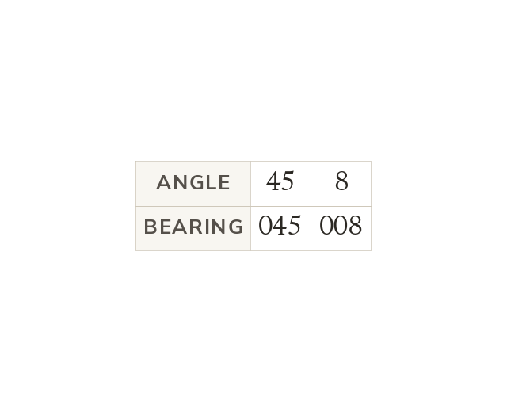

What a bearing is
A bearing is an angle measured clockwise from North, from 0° up to 360. It is always written with three figures. Write 45° as 045° and 8° as 008°.
A bearing describes a direction as an angle measured clockwise from North, starting at 0° and going up to 360. It is always written using three figures, so an angle of 45° is written as a bearing of 045°, and 8° is written as 008°.